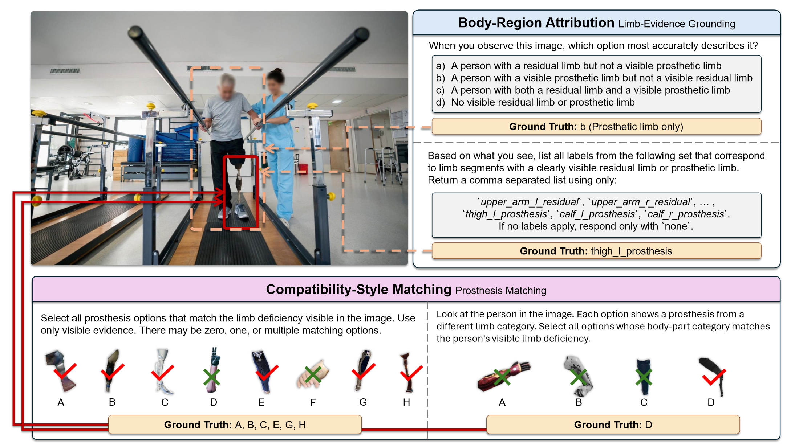
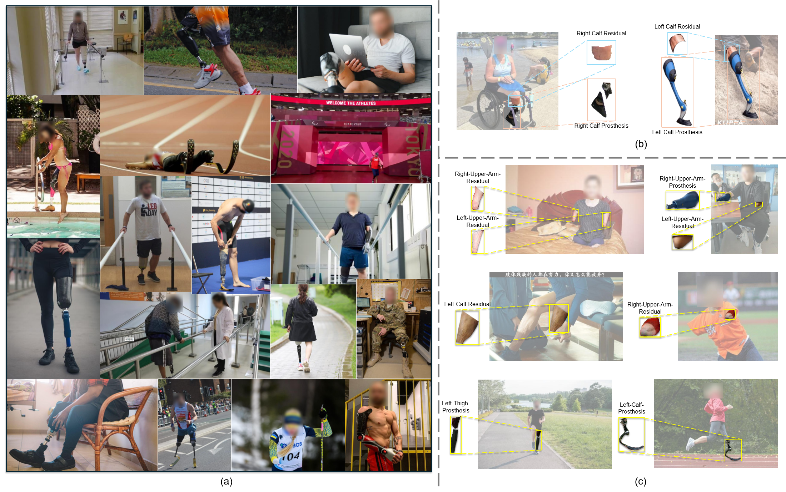
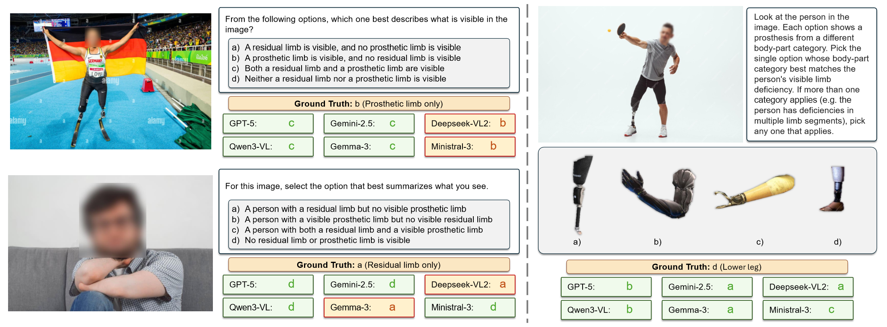

Limb-Evidence Grounding
Queries evaluate whether visible residual-limb evidence and prosthetic-device evidence are preserved from Presence to Attribution.
Evaluating Limb-Evidence Preservation in Vision-Language Models on Images of Individuals with Limb Deficiencies
InclusiveVLM-LEP is a test-only human-calibrated benchmark on open-world images of individuals with limb deficiencies. It links readouts through a shared annotation basis, moving from coarse recognition to body-region attribution and compatibility-style option matching.

A diagnostic benchmark for limb-evidence preservation in general-purpose vision-language models.
Queries evaluate whether visible residual-limb evidence and prosthetic-device evidence are preserved from Presence to Attribution.
Instances evaluate compatibility-style option matching from visible body-device configuration evidence.
Presence, Attribution, and Compatibility are reported through paper-facing task variants.
Coarse recognition of visible residual-limb and prosthetic-limb evidence.
Attribution-Constrained and Attribution-FreeForm variants evaluate body-region attribution over the same annotation basis. Free-form textual responses are normalized to canonical attribution labels with a deterministic parser.
Compatibility-Category and Compatibility-Diversity variants evaluate compatible-set recovery under structured answer spaces.
InclusiveVLM-LEP links open-world images to a shared annotation basis for visible residual-limb and prosthetic-device evidence.
The benchmark uses open-world images of individuals with limb deficiencies across varied scenes, poses, activities, residual-limb evidence, and prosthetic-device evidence.

Visible residual-limb and prosthetic-device evidence is connected to body-region attribution labels, allowing readouts to move from coarse recognition to Attribution.
The benchmark exposes structured failures in limb-evidence preservation.
Human raters reach 98.0% Presence accuracy; the strongest model reaches 77.2%.
Human raters reach 83.4% set mIoU; the strongest model reaches 29.4%, showing that coarse recognition does not ensure limb-evidence preservation.
Human raters reach 56.0% accuracy; the strongest model reaches 37.3%, leaving substantial headroom for category-level matching.
The strongest runs reach only around 10% Exact-set accuracy, while Partial accuracy can exceed 80%.
The submitted paper reports all scores as percentages with 95% confidence intervals. This page surfaces the headline values that support the paper's diagnostic claims, rather than reproducing full result tables.
Qualitative examples show how benchmark variants reveal failures that are structured rather than uniform.

The repository contains reviewer-facing code only. The full data are supplied separately through the review artifact channel.
InclusiveVLM-LEP is not clinical or prosthetic recommendation tooling.
Evaluation code, task runners, metrics, OpenAI and Gemini API backends, local vLLM-compatible serving, full-dataset configs, reproduction commands, and paper figure composites.
Full benchmark data and source images are distributed through the review artifact channel, not through this code repository.
Raw data, raw predictions, result files, logs, packaged artifacts, internal notes, hidden helper state, and non-anonymized paper files.
Anonymous placeholder for review.
@inproceedings{anonymous2026seeing,
title = {Seeing Is Not Enough: Evaluating Limb-Evidence Preservation in Vision-Language Models on Images of Individuals with Limb Deficiencies},
author = {Anonymous},
booktitle = {Submitted to NeurIPS 2026 Evaluations and Datasets Track},
year = {2026}
}